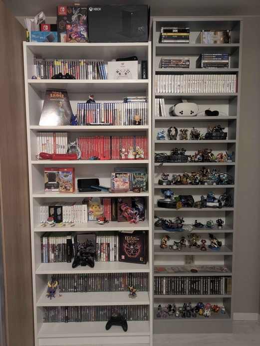

Hobbies
My main hobby is gaming, and thus my hobbies are related to this in one way or another.
-
Game collector:
I collect games originating from all kinds of systems; as old as the Nintendo Game Boy, and as new as the Nintendo Switch 2.
Link to my collection
I find game preservation to be important as it's a form of art that's unfortunately not looked after too well.
 -
Completionist
While this goal seems unreasonable and unrealistic, it's still one I enjoy trying to work towards - completing all of the best-known games and their franchises.
View my progress
Along with this, I like hunting achievements/trophies. However, I usually get side-tracked by something new. But still fun to try? -
Game Dev:
As one would guess, being this passionate about gaming would obviously lead to one wanting to make them.
Though, for the time being, I'm still learning the ropes, and have nothing to show for, yet.